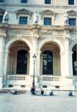
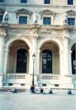

I flew into Manchester, England and drove around England and Wales in a rental car for a while before starting the bike part of the trip. With my bike, I took the train from Cardiff, Wales to Paddington Station in London. My train to the ferries at Newhaven left from Victoria Station, so I allowed plenty of time to get from one London station to the other. Riding in heavy traffic on the "wrong" side of the road wasn't bad at all, actually, and I had a chance to poke around London a bit as well. The trains were very convenient as far as putting the bike in the guards van.
The ferry from Newhaven to Dieppe was late but no problem with the bike. They told me to ride my bike up the ramp into the ship. I followed their directions but figured that I'd made a wrong turn, since the only ramp in sight was a huge rough ramp into the end of the ship. There were loads of throbbing, idling trucks and cars are waiting on the far side of a customs-type gate so I went back and asked for directions again. It turned out that I was supposed to ride right up the huge ramp. That went into this huge cavernous section and there was a rail to lock my bike to. I felt quite tiny riding there...
No problem with the train from Dieppe to Paris, Gare de St Lazare. I had some time to spend there before I caught a train from Gare de Lyon so I rode around Paris. All the monuments are quite close together so I amused myself by taking pictures of my bicycle in front of each of them. The Tour de France was about to finish there the next morning so the Champs-Elysee had lots of barricades and grandstands set up. I wondered if there were more barricades than usual after the disaster with the picture-taking policeman earlier in the Tour.
No problem with the train from Paris to Clermont-Ferrand. I spent a few days there and then rode from C-F to St. Etienne through the Livradois and Furez mountains, and then took the train to Lyon for a week-long conference in geometric methods in low-dimensional topology. I got some chances to climb some hills and explore Lyon on my bike a bit.
Then I took the train from Lyon to Montpellier. This train was very crowded (Sat. morning) but no problems except I had to stand the whole way. I got to Montpellier about 11am and started riding along the Mediterranean and westwards. There were some nice beaches along the coast there and the riding was flat and fast, past Sete, which had some canals. Then along a nice narrower strip of sand and beaches to Agde, inland a bit, some nice ruins along in there, and close to Narbonne. I had found a nice canal path to ride along near Vinassan and saw a remarkable promising canal path near Narbonne. It took me some exploring, though, and I couldn't find the path from the east. So I headed into Narbonne and picked up the path there.

It was a great double-track road which was quite desolate and nice. The canal goes along a causeway built for the railroad and has some manual locks in it. It was nice riding but a bit difficult not because of the dirt gravel or grass but because my front low-riding panniers would get caught up on some bits. It was nice to sleep on this narrow strip of land between two bays.
The next day, I carried on along the canal path to a nice park before Port-la-Nouvelle (combination fishing/tourist town) and then down along the coast again. There were a number of beach towns of varying degrees of fashion, including Port-Leucate, Port-Barcares, Carnet-Plage, and St. Cyprien-Plage. These were nice places to swim and they were quite popular and there were loads of tourists. I took a siesta which turned out to be a bad idea since it rained hard later on. I should have waited to take a nap until it was raining... Further down the coast, I explored some ruins and forts near Collioure and slept there.
The next day was great. Lots of rocky coast and nice towns, as well more hills and into Spain's Costa Brava, down to a nice stretch of coastal highway past Sant Feliu de Guixols.
The next day was gorgeous riding along this coast highway. A gorgeous sunrise and wonderful craggy coast and hills made this a really nice stretch of road. This ended, though, in the very touristy town of Tossa de Mar, and there were rather huge busses on the road after that. The roads near the beach weren't too bad but it was hard to go very fast through all these beach towns. I stopped and swam as it got warmer and took a nap when it got hot. For quite a long time along the beach it was pretty much the same- lots of people, particularly as I got closer to Barcelona. Getting into Barcelona was no problem and I found the main train station. I got a ticket to Valencia and asked about my bike. Evidently, it wasn't allowed but I thought that I would try putting out of the way. That worked well; I was able to get it completely tucked out of the way with its wheels off on a low shelf at the end of the car.
I was met in Valencia by an old friend and spent some time in a small village in the hills near there. While I was there, some people from the village took me on a nice ride along the route of the new high-speed rail line between Valencia and Madrid. (It seems like all of Spain is being torn apart for new roads and railways.) This line is still under construction, so there is only the dirt rail bed. It was great fun riding there since there is this huge cut and just a great smooth place to ride. We rode through a long tunnel and across some much longer bridges. It was great fun, kind of like riding on a yet-to-be-opened freeway in the States. It is much easier to get a sense of scale of things on a bike. It is sobering how much dirt has to be moved out of the way for such a project.
A few days later, I was set to take the train from Almansa to Madrid. But when I tried to get on the train, the conductor stood in the way and would not let me on with my bike. I had suspected that bikes weren't allowed on this train ("Talgo") and this guy was not going to let me on. So I ended up getting a ride in a car for some of the way to Madrid and cycling the last 90 miles or so, which was okay even though it was hot. During that bit, I met a guy driving a truck who stopped to chat after he'd passed me. We spoke for a while (in French, best common language) and he was curious about my trip and very encouraging.
I rolled my bike up to the checkin counter at the airport for the next day's flight. I wanted to make sure everything was ok but unfortunately, they didn't have anything to put my bike in. They were supposed to, they agreed, but in fact it had been years since they (BA) had gotten the boxes or bags that they were supposed to have. This was a bit troubling, since I'd called BA in advance and they had assured me that there would be some boxes or bags. But it was really no problem, since they took the bike naked anyway. It is probably just as well, since that way it looks frailer and they will hopefully be more careful with it.
I saw the bike being loaded on and off the plane in Madrid and London. In Charlotte, NC, a friendly customs guy went and made sure that it had made it and that it was OK. And finally back in San Francisco, they brought it out and it looked totally unmolested. I put the bars straight, pedals back on and loaded it up and rode off to the friend's place in San Mateo where I'd left my truck. No problems leaving the airport (you kind of head west along a frontage road and then bend south to surface streets; no freeway riding needed...) and finding my way back home.
I brought too much stuff. I should have sent the books, notes and preprints for the conference ahead and sent them back from Lyon, instead of carrying them over every pass. I also had too many clothes. It was hot so I didn't need my long-sleeve wool jersey at all. Not even the short-sleeve one. I didn't take a proper tent, no problem there. I had a groundcloth/tarp and a tube tent, which is light and compact and I didn't need, though it did rain a couple of times. No mechanical problems which weren't mere adjustments, so the light tool kit (Cool Tool, levers, tube, zip-ties, pump, flat kit) was totally sufficient.
Swimming was a bit more of a pain, as I felt like I had to lock my bike up then. I can't see a thing without my glasses, so it was hard to keep an eye on my stuff when I was swimming, (let alone find it after coming in out of the sea.)
The commericial campgrounds were loud and crowded. I avoided them and just slept out of the way. I don't know about the legality of that but I had no problems.
I saw plenty of other cyclists but very few other laden cycle tourists. I think I saw only 4 in 700+ miles of riding.
Trains and ferries were great, for the most part
All in all I had a great trip.
{kind=link}